La pressione
sul bottone Elabora determina l'avvio dell'elaborazione e la determinazione
dei cicli di lavorazione con eventuale assegnazione diretta del terzista;
il risultato compare nella pagina relativa all'assegnazione.
La pressione
sul bottone Elabora determina l'avvio dell'elaborazione e la determinazione
dei cicli di lavorazione con eventuale assegnazione diretta del terzista;
il risultato compare nella pagina relativa all'assegnazione.Pianificazione lavorazioni
La procedura consente, sulla base dei cicli di lavorazione e delle fasi inserite sulle distinte base, di generare tutti gli ordini da produrre esternamente; se per ciascuna fase del ciclo di produzione è definito un fornitore preferenziale è possibile generare immediatamente l’ordine, altrimenti attraverso l’apposita funzione di assegnazione fornitore è possibile scegliere fra i terzisti l’azienda che provvederà a svolgere la lavorazione c/terzi e generare l’ordine al fornitore.
La procedura di pianificazione contempla una serie di metodi di selezione relativi alla generazione dei dati che porteranno ed una fase di assegnazione a terzisti ed eventualmente alla generazione diretta degli ordini terzisti (di seguito OT). La procedura consente di generare gli OT partendo dagli ordini clienti, dalle disposizioni di produzione oppure manualmente. Ogni opzione di generazione è utilizzabile solo in presenza del relativo modulo.
La richiesta parametri si diversifica a seconda che si utilizzi la generazione da ordini clienti, oppure la generazione da disposizioni, oppure la generazione manuale; il campo tipo elaborazione determina il tipo di selezione dei dati relativi alla preparazione; è possibile utilizzare la procedura anche in un secondo momento, dopo la generazione della pianificazione, per effettuare direttamente l'assegnazione a fornitori. Una volta ultimata la selezione si passa alla fase di preparazione ed infine alla fase di salvataggio della preparazione da cui è possibile effettuare l'assegnazione a fornitori e la generazione degli OT; la data dell'operazione viene utilizzata per la registrazione della pianificazione e come data ordine in caso di generazione degli OT.
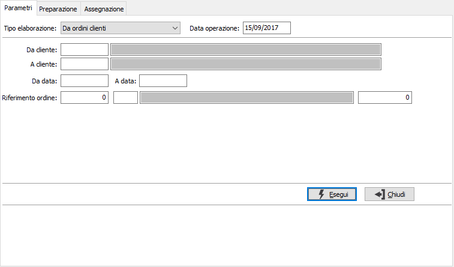
DA CLIENTE: eventuale codice del cliente, presente in anagrafica clienti, da cui si vuole iniziare la selezione. Confermando a vuoto, la selezione inizia dal primo cliente valido. Sul campo sono attive le funzioni di ricerca (F9).
A CLIENTE: eventuale codice del cliente, presente in anagrafica clienti, con cui si vuole terminare la selezione. Confermando a vuoto, la selezione termina con l’ultimo cliente valido. Sul campo sono attive le funzioni di ricerca (F9).
DA DATA: eventuale data da cui deve iniziare l’analisi dei documenti relativamente ai precedenti parametri di selezione. Confermando a vuoto, l’analisi inizia con il primo documento valido.
A DATA: eventuale data con cui si desidera terminare l’analisi dei documenti relativamente ai precedenti parametri di selezione. Confermando a vuoto, l’analisi si conclude con l'ultimo documento valido.
RIFERIMENTO ORDINE (ANNO): indica l'anno degli ordini a cui si vuole limitare la selezione.
RIFERIMENTO ORDINE (CAUSALE): eventuale codice della Causale ordini a cui si vuole limitare la selezione. Sul campo sono attive le funzioni di ricerca (F9).
RIFERIMENTO ORDINE (NUMERO): indica il numero dell'ordine a cui si vuole limitare la selezione, in combinazione con anno e/o causale.
Se attiva la gestione progetti è possibile specificare anche il progetto da analizzare.
Generazione da disposizioni produzione
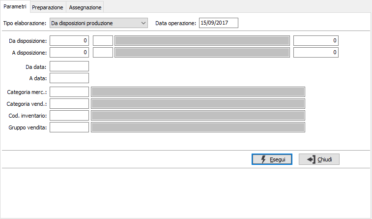
DA DISPOSIZIONE: tre campi per contenere rispettivamente anno, causale e numero della disposizione da cui si vuole iniziare la selezione. Confermando a vuoto, la selezione inizia dalla prima disposizione compatibile con i successivi parametri.
A DISPOSIZIONE: tre campi per contenere rispettivamente anno, causale e numero della disposizione con cui si vuole concludere la selezione. Confermando a vuoto, la selezione termina con l’ultima disposizione compatibile con i successivi parametri.
DA DATA: data disposizione da cui si vuole iniziare la selezione. Confermando a vuoto, la selezione inizia dalla prima data valida.
A DATA: data disposizione con cui si vuole concludere la selezione. Confermando a vuoto, la selezione termina con l'ultima data valida.
CATEGORIA MERCEOLOGICA: eventuale codice della categoria merceologica, riferita ai prodotti, per cui effettuare la selezione. Sul campo sono attive le funzioni di ricerca (F9).
CATEGORIA DI VENDITA: eventuale codice della categoria di vendita, riferita ai prodotti, per cui effettuare la selezione. Sul campo sono attive le funzioni di ricerca (F9).
CODICE INVENTARIO: eventuale codice inventario, riferito ai prodotti, per cui effettuare la selezione. Sul campo sono attive le funzioni di ricerca (F9).
GRUPPO VENDITA: eventuale codice del gruppo vendita, riferito ai prodotti, per cui effettuare la selezione. Sul campo sono attive le funzioni di ricerca (F9).
Se attiva la gestione progetti è possibile specificare anche il progetto da analizzare.
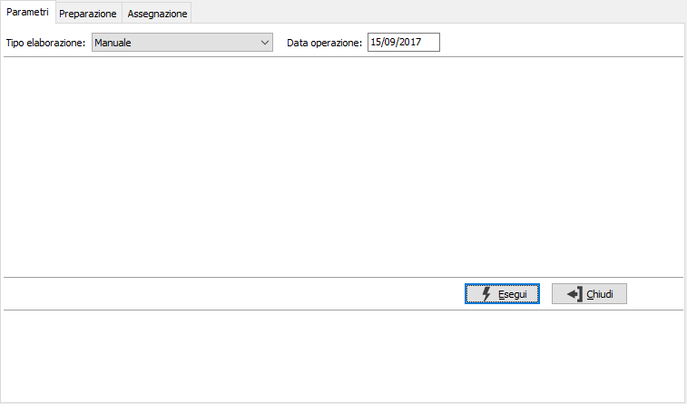
Questo tipo di selezione utilizza dei dati inseriti manualmente in fase di preparazione e non contempla nessun tipo di selezione.
Questa sezione consente di specificare criteri di ricerca relativi a preparazioni già effettuate per le quali non sia stata ancora effettuata la fase di assegnazione a fornitore. Di conseguenza da questa sezione si passerà direttamente all'assegnazione ed eventuale generazione degli OT. Se presente il modulo di produzione saranno disponibili come limiti di selezione anche da data consegna ed a data consegna, per filtrare ulteriormente le richieste in relazione alle consegne di produzione.
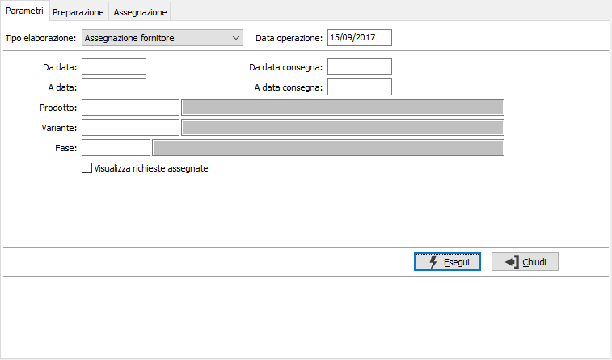
DA DATA: eventuale data da cui deve iniziare l’analisi delle preparazioni da selezionare. Confermando a vuoto, l’analisi inizia con il primo documento valido.
A DATA: eventuale data con cui si desidera terminare l'analisi delle preparazioni da selezionare. Confermando a vuoto, l’analisi si conclude con l'ultima preparazione valida.
PRODOTTO: codice del prodotto per cui si vuole effettuare l'assegnazione. Sul campo sono attive le funzioni di ricerca (F9).
FASE: codice della fase di lavorazione per cui si vuole effettuare l'assegnazione. Sul campo sono attive le funzioni di ricerca (F9).
VISUALIZZA RICHIESTE ASSEGNATE: consente di vedere solo gli ordini ancora da assegnare (casella vuota) oppure anche le richieste già assegnate (casella con segno di spunta).
Se attiva la gestione progetti è possibile specificare anche il progetto da analizzare.
Terminata la fase di selezione, si accede alla pagina relativa alla preparazione, dove saranno elencati i prodotti selezionati dalla sezione precedente e/o dove si potranno inserire prodotti in modo manuale. Nel caso si provenga dall'elaborazioni di ordini o di disposizioni saranno visualizzati i riferimenti al documento e sarà possibile modificare solo i campi magazzino e consegna.
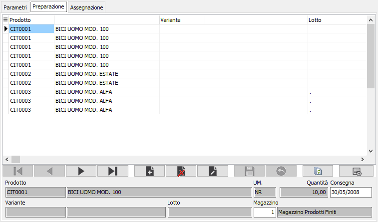
PRODOTTO: campo alfanumerico per inserire il codice dell’articolo che si intende preparare, il prodotto deve avere una distinta base ed un ciclo di lavorazione. Sul campo sono attive le funzioni di ricerca (F9).
QUANTITÀ: campo numerico per inserire la quantità da preparare per l'articolo attivo.
CONSEGNA: campo data per l'inserimento della data effettiva di consegna.
MAGAZZINO: codice del magazzino aziendale da cui deve essere ordinata la merce. Sul campo sono attive le funzioni di ricerca (F9).
La pressione
sul bottone Elabora determina l'avvio dell'elaborazione e la determinazione
dei cicli di lavorazione con eventuale assegnazione diretta del terzista;
il risultato compare nella pagina relativa all'assegnazione.
Assegnazione definitiva e salvataggio
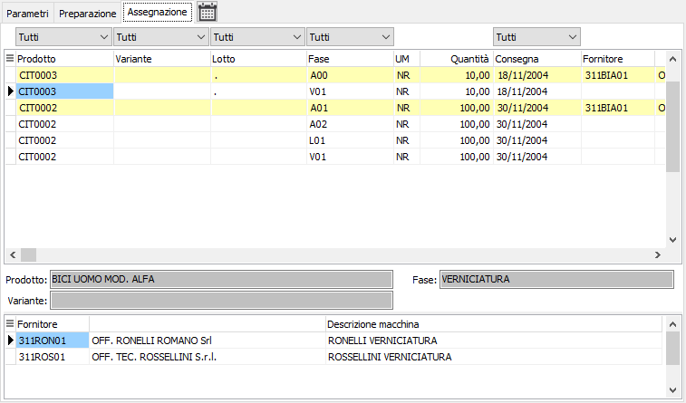
In questa pagina vengono visualizzate le fasi di lavorazione elaborate per i prodotti indicati in preparazione; dove possibile viene effettuata l'assegnazione al fornitore preferenziale della fase di lavorazione. Sopra le colonne sono presenti delle caselle che consentono di filtrare la visualizzazione in relazione ai valori delle singole colonne: ad esempio cliccando sulla colonna prodotto, se presenti più codici, selezionandone uno saranno visualizzate solo le righe dove compare il prodotto selezionato; le caselle di filtro sono combinabili, ad esempio seleziono un prodotto ed una fase.
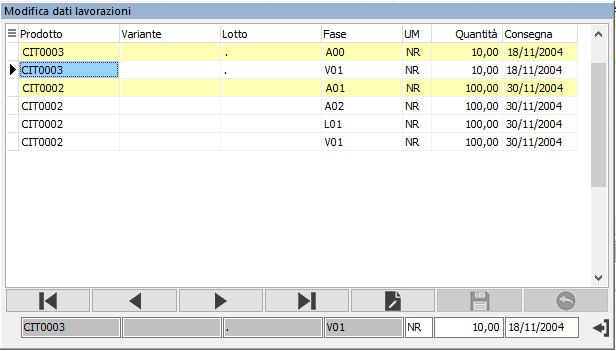
In questa fase è possibile anche modificare l'unità di misura e la quantità, se il prodotto ha più unità di misura, oppure la data di consegna; cliccando sull'apposita colonna in corrispondenza del valore da modificare si aprirà un pannello con i dati da modificare. Il pulsante mostrato
a lato consente di accedere ad una specifica finestra che permette la
modifica dei campi sopra elencati in modalità classica, di conseguenza
se si devono effettuare variazioni su più righe risulta più comoda. Le
righe vengono mostrate, come nella finestra principale, in blu se sono
state modificate manualmente, evidenziate se risultano assegnate a fornitore,
in rosso se hanno già generato ordine terzista; queste ultime non possono
essere modificate o selezionate in alcun modo. Sul campo unità di misura,
sia della finestra di modifica, che della finestra principale, in caso
di utilizzo di una unità di misura diversa dalla primaria, è attivo il
tasto funzione F11 con cui si può accedere alla finestra relativa al fattore di conversione. La modifica
dell'unità di misura determina l'immediato ricalcolo della quantità utilizzando
il fattore di conversione inserito, o quello del prodotto.
Il pulsante mostrato
a lato consente di accedere ad una specifica finestra che permette la
modifica dei campi sopra elencati in modalità classica, di conseguenza
se si devono effettuare variazioni su più righe risulta più comoda. Le
righe vengono mostrate, come nella finestra principale, in blu se sono
state modificate manualmente, evidenziate se risultano assegnate a fornitore,
in rosso se hanno già generato ordine terzista; queste ultime non possono
essere modificate o selezionate in alcun modo. Sul campo unità di misura,
sia della finestra di modifica, che della finestra principale, in caso
di utilizzo di una unità di misura diversa dalla primaria, è attivo il
tasto funzione F11 con cui si può accedere alla finestra relativa al fattore di conversione. La modifica
dell'unità di misura determina l'immediato ricalcolo della quantità utilizzando
il fattore di conversione inserito, o quello del prodotto.
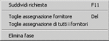
Per effettuare l'associazione è sufficiente fare doppio clic sul fornitore, in basso, dopo avere selezionato la fase desiderata. Sulla griglia principale è attivo il menù, richiamabile col tasto destro del mouse, riprodotto a lato, dal quale è possibile togliere l'assegnazione alla singola fase (tasto DEL), togliere l'assegnazione a tutte le fasi oppure eliminare direttamente una fase di lavorazione, oppure suddividere la richiesta fra più fornitori quando esistono più fornitori disponibili per la fase; se presente la produzione ed abilitato il flag "Aggiorna componenti da ordini terzisti" non sarà possibile effettuare la suddivisione della richiesta. Selezionando la voce dal menù o premendo F11 sul rigo viene attivata la seguente finestra: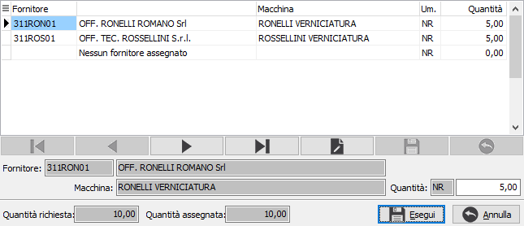
La finestra consente di inserire a quantità necessaria per ogni fornitore disponibile ed eventualmente assegnare una parte a "Nessun fornitore"; sul campo è disponibile il tasto F11 che porta automaticamente la quantità rimasta da assegnare; premendo Esegui si salva la selezione.
La pressione sul tasto Salva sulla toolbar determinerà il salvataggio, previa richiesta di conferma, delle fasi di lavorazione, assegnate e non, presenti. Nel caso sia stata effettuata anche una
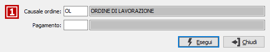
sola assegnazione viene richiesto se si desidera generare gli ordini fornitori e nel caso affermativo compare la finestra mostrata a lato. In questa finestra è necessario specificare la causale ordine da utilizzare per la generazione degli OT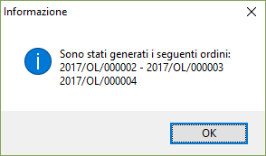
ed eventualmente un codice pagamento da applicare a tutti gli ordini, altrimenti sarà preso il pagamento specificato sul fornitore. Al termine della generazione degli ordini sarà visualizzato un messaggio dove sono riportati tutti gli ordini generati e sarà richiesto se si vuole effettuarne la stampa.